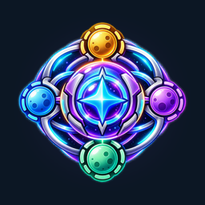

ORBIT DOMINIONPrivacy Policy
Last updated: 2026-11-01
Orbit Dominion is a free offline strategy game by NK CORP. We respect your privacy: the game does not collect, store on servers or share any personal data.
Data we collect
None. The game has no accounts, no registration, no advertising, no analytics and no tracking. It does not request your name, email, location, contacts or any other personal information.
Data stored on your device
Your game progress (completed levels and calendar days) and settings (sound, vibration, language, game speed) are saved only locally on your device. They never leave it. Deleting the game deletes this data.
Permissions
On Android the game may use vibration for haptic feedback. It does not use the internet, camera, microphone, location or storage outside its own folder.
Third parties
The game contains no third-party advertising, analytics or tracking SDKs and does not sell or share data with anyone.
Children
The game is suitable for all ages and does not knowingly collect any information from children or anyone else.
Changes
If this policy changes, the updated version will be published on this page with a new date.
Contact
Questions about privacy: kuzievkola.apple@gmail.com
Политика конфиденциальности
Обновлено: 2026-11-01
Orbit Dominion — бесплатная офлайн-стратегия от NK CORP. Мы уважаем вашу приватность: игра не собирает, не хранит на серверах и никому не передаёт персональные данные.
Какие данные мы собираем
Никаких. В игре нет аккаунтов, регистрации, рекламы, аналитики и отслеживания. Она не запрашивает имя, почту, местоположение, контакты или другую личную информацию.
Данные на вашем устройстве
Прогресс (пройденные уровни и дни календаря) и настройки (звук, вибрация, язык, скорость игры) сохраняются только на вашем устройстве и никуда не отправляются. При удалении игры они удаляются.
Разрешения
На Android игра может использовать вибрацию для тактильного отклика. Она не использует интернет, камеру, микрофон, геолокацию и файлы вне своей папки.
Третьи стороны
В игре нет сторонних SDK рекламы, аналитики или отслеживания; мы не продаём и не передаём данные никому.
Дети
Игра подходит для любого возраста и не собирает никакой информации ни о детях, ни о ком-либо ещё.
Изменения
Если политика изменится, новая версия будет опубликована на этой странице с новой датой.
Контакты
Вопросы о конфиденциальности: kuzievkola.apple@gmail.com
Política de privacidad
Última actualización: 2026-11-01
Orbit Dominion es un juego de estrategia gratuito y sin conexión de NK CORP. Respetamos tu privacidad: el juego no recopila, no almacena en servidores ni comparte datos personales.
Datos que recopilamos
Ninguno. El juego no tiene cuentas, registro, publicidad, analíticas ni seguimiento. No solicita tu nombre, correo, ubicación, contactos ni otra información personal.
Datos en tu dispositivo
Tu progreso (niveles completados y días del calendario) y ajustes (sonido, vibración, idioma, velocidad) se guardan solo en tu dispositivo y nunca salen de él. Al borrar el juego se borran.
Permisos
En Android el juego puede usar la vibración para la respuesta háptica. No usa internet, cámara, micrófono, ubicación ni archivos fuera de su carpeta.
Terceros
El juego no incluye SDK de publicidad, analíticas o seguimiento de terceros y no vende ni comparte datos.
Menores
El juego es apto para todas las edades y no recopila información de menores ni de nadie.
Cambios
Si esta política cambia, la nueva versión se publicará en esta página con una nueva fecha.
Contacto
Preguntas sobre privacidad: kuzievkola.apple@gmail.com
Politique de confidentialité
Dernière mise à jour: 2026-11-01
Orbit Dominion est un jeu de stratégie gratuit et hors ligne de NK CORP. Nous respectons votre vie privée : le jeu ne collecte, ne stocke sur aucun serveur et ne partage aucune donnée personnelle.
Données collectées
Aucune. Le jeu n'a ni compte, ni inscription, ni publicité, ni statistiques, ni suivi. Il ne demande ni nom, ni e-mail, ni position, ni contacts, ni aucune autre information personnelle.
Données sur votre appareil
Votre progression (niveaux et jours du calendrier terminés) et vos réglages (son, vibration, langue, vitesse) sont enregistrés uniquement sur votre appareil et n'en sortent jamais. Ils sont supprimés avec le jeu.
Autorisations
Sur Android, le jeu peut utiliser la vibration pour le retour haptique. Il n'utilise ni internet, ni caméra, ni micro, ni localisation, ni fichiers hors de son dossier.
Tiers
Le jeu ne contient aucun SDK tiers de publicité, de statistiques ou de suivi et ne vend ni ne partage aucune donnée.
Enfants
Le jeu convient à tous les âges et ne collecte aucune information sur les enfants ni sur quiconque.
Modifications
Si cette politique change, la nouvelle version sera publiée sur cette page avec une nouvelle date.
Contact
Questions sur la confidentialité : kuzievkola.apple@gmail.com
Política de privacidade
Atualizado em: 2026-11-01
Orbit Dominion é um jogo de estratégia gratuito e offline da NK CORP. Respeitamos sua privacidade: o jogo não coleta, não armazena em servidores nem compartilha dados pessoais.
Dados coletados
Nenhum. O jogo não tem contas, cadastro, anúncios, análises nem rastreamento. Ele não pede nome, e-mail, localização, contatos ou qualquer outra informação pessoal.
Dados no seu dispositivo
Seu progresso (níveis e dias do calendário concluídos) e configurações (som, vibração, idioma, velocidade) ficam salvos apenas no seu dispositivo e nunca saem dele. São apagados junto com o jogo.
Permissões
No Android o jogo pode usar a vibração para resposta tátil. Não usa internet, câmera, microfone, localização nem arquivos fora da sua pasta.
Terceiros
O jogo não contém SDKs de anúncios, análises ou rastreamento de terceiros e não vende nem compartilha dados.
Crianças
O jogo é adequado para todas as idades e não coleta informações de crianças nem de ninguém.
Alterações
Se esta política mudar, a nova versão será publicada nesta página com uma nova data.
Contato
Dúvidas sobre privacidade: kuzievkola.apple@gmail.com
Datenschutzerklärung
Zuletzt aktualisiert: 2026-11-01
Orbit Dominion ist ein kostenloses Offline-Strategiespiel von NK CORP. Wir respektieren deine Privatsphäre: Das Spiel erhebt keine personenbezogenen Daten, speichert sie nicht auf Servern und gibt sie nicht weiter.
Erhobene Daten
Keine. Das Spiel hat keine Konten, keine Registrierung, keine Werbung, keine Analyse und kein Tracking. Es fragt weder Name, E-Mail, Standort, Kontakte noch andere persönliche Informationen ab.
Daten auf deinem Gerät
Dein Fortschritt (abgeschlossene Level und Kalendertage) und deine Einstellungen (Ton, Vibration, Sprache, Spieltempo) werden nur lokal auf deinem Gerät gespeichert und verlassen es nie. Beim Löschen des Spiels werden sie gelöscht.
Berechtigungen
Unter Android kann das Spiel die Vibration für haptisches Feedback nutzen. Es nutzt weder Internet, Kamera, Mikrofon, Standort noch Dateien außerhalb seines Ordners.
Drittanbieter
Das Spiel enthält keine Werbe-, Analyse- oder Tracking-SDKs von Drittanbietern und verkauft oder teilt keine Daten.
Kinder
Das Spiel ist für alle Altersgruppen geeignet und erhebt keine Informationen über Kinder oder andere Personen.
Änderungen
Ändert sich diese Erklärung, wird die neue Fassung mit neuem Datum auf dieser Seite veröffentlicht.
Kontakt
Fragen zum Datenschutz: kuzievkola.apple@gmail.com
隐私政策
最后更新: 2026-11-01
Orbit Dominion 是 NK CORP 推出的免费离线策略游戏。我们尊重你的隐私：游戏不会收集、在服务器上存储或分享任何个人数据。
我们收集的数据
无。游戏没有账号、注册、广告、统计分析或追踪，也不会索取你的姓名、邮箱、位置、联系人或任何其他个人信息。
保存在你设备上的数据
游戏进度（已完成的关卡和日历日期）和设置（声音、振动、语言、游戏速度）只保存在你的设备上，绝不会离开设备。删除游戏即删除这些数据。
权限
在 Android 上，游戏可能使用振动提供触感反馈。游戏不使用网络、相机、麦克风、位置或其文件夹以外的存储。
第三方
游戏不包含任何第三方广告、统计或追踪 SDK，也不会出售或与任何人分享数据。
儿童
游戏适合所有年龄段，不会收集儿童或任何人的信息。
变更
如本政策有变更，更新后的版本将连同新日期发布在本页面。
联系方式
隐私相关问题：kuzievkola.apple@gmail.com
プライバシーポリシー
最終更新日: 2026-11-01
Orbit Dominion は NK CORP による無料のオフライン戦略ゲームです。私たちはプライバシーを尊重します。本ゲームは個人データを収集せず、サーバーに保存せず、共有もしません。
収集するデータ
ありません。アカウント、登録、広告、分析、トラッキングは一切なく、名前、メール、位置情報、連絡先などの個人情報も求めません。
端末に保存されるデータ
進行状況（クリアしたステージとカレンダーの日）と設定（サウンド、バイブレーション、言語、ゲーム速度）は端末内にのみ保存され、外部へ送信されることはありません。ゲームを削除すると消去されます。
権限
Android ではハプティクスのためにバイブレーションを使用する場合があります。インターネット、カメラ、マイク、位置情報、専用フォルダ外のストレージは使用しません。
第三者
第三者の広告・分析・トラッキング SDK は含まれず、データの販売や共有も行いません。
お子さま
本ゲームは全年齢向けで、お子さまを含め誰の情報も収集しません。
変更
本ポリシーを変更する場合は、新しい日付とともにこのページで公開します。
お問い合わせ
プライバシーに関するお問い合わせ：kuzievkola.apple@gmail.com
개인정보 처리방침
최종 업데이트: 2026-11-01
Orbit Dominion은 NK CORP의 무료 오프라인 전략 게임입니다. 우리는 개인정보를 존중합니다. 이 게임은 개인 데이터를 수집하거나 서버에 저장하거나 공유하지 않습니다.
수집하는 데이터
없습니다. 계정, 가입, 광고, 분석, 추적이 없으며 이름, 이메일, 위치, 연락처 등 어떤 개인정보도 요구하지 않습니다.
기기에 저장되는 데이터
진행 상황(완료한 레벨과 캘린더 날짜)과 설정(사운드, 진동, 언어, 게임 속도)은 기기에만 저장되며 외부로 전송되지 않습니다. 게임을 삭제하면 함께 삭제됩니다.
권한
Android에서는 햅틱 피드백을 위해 진동을 사용할 수 있습니다. 인터넷, 카메라, 마이크, 위치, 전용 폴더 외의 저장소는 사용하지 않습니다.
제3자
제3자 광고·분석·추적 SDK가 없으며 데이터를 판매하거나 공유하지 않습니다.
아동
이 게임은 전 연령에 적합하며 아동을 포함한 누구의 정보도 수집하지 않습니다.
변경
방침이 변경되면 새 날짜와 함께 이 페이지에 게시합니다.
문의
개인정보 관련 문의: kuzievkola.apple@gmail.com
गोपनीयता नीति
अंतिम अपडेट: 2026-11-01
Orbit Dominion, NK CORP का एक मुफ़्त ऑफ़लाइन रणनीति गेम है। हम आपकी गोपनीयता का सम्मान करते हैं: यह गेम कोई निजी डेटा न इकट्ठा करता है, न सर्वर पर रखता है और न किसी से साझा करता है।
हम कौन-सा डेटा इकट्ठा करते हैं
कोई नहीं। गेम में कोई खाता, पंजीकरण, विज्ञापन, एनालिटिक्स या ट्रैकिंग नहीं है। यह आपका नाम, ईमेल, स्थान, संपर्क या कोई अन्य निजी जानकारी नहीं माँगता।
आपके डिवाइस पर डेटा
आपकी प्रगति (पूरे किए गए स्तर और कैलेंडर के दिन) और सेटिंग्स (ध्वनि, कंपन, भाषा, गति) केवल आपके डिवाइस पर सहेजी जाती हैं और कहीं नहीं भेजी जातीं। गेम हटाने पर ये भी हट जाती हैं।
अनुमतियाँ
Android पर गेम हैप्टिक फ़ीडबैक के लिए कंपन का उपयोग कर सकता है। यह इंटरनेट, कैमरा, माइक्रोफ़ोन, स्थान या अपने फ़ोल्डर के बाहर की स्टोरेज का उपयोग नहीं करता।
तृतीय पक्ष
गेम में किसी तृतीय पक्ष का विज्ञापन, एनालिटिक्स या ट्रैकिंग SDK नहीं है और हम कोई डेटा न बेचते हैं न साझा करते हैं।
बच्चे
गेम सभी उम्र के लिए उपयुक्त है और बच्चों या किसी और की कोई जानकारी इकट्ठा नहीं करता।
बदलाव
अगर यह नीति बदलती है, तो नया संस्करण नई तारीख़ के साथ इसी पेज पर प्रकाशित होगा।
संपर्क
गोपनीयता से जुड़े प्रश्न: kuzievkola.apple@gmail.com